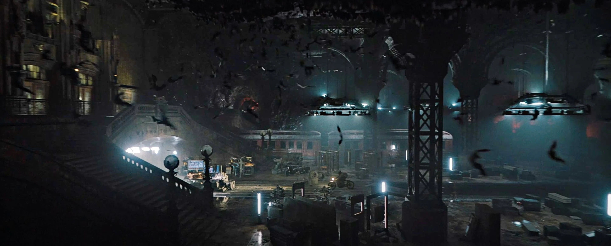

La Batcave

¿Que es la Batcave?
La Batcave (Batcueva o Baticueva en español) es un lugar subterráneo que aparece en los cómics estadounidenses publicados por DC Comics. Es la sede del superhéroe Batman y sus aliados, que consta de cuevas debajo de su residencia personal, la Mansión Wayne.
Historia ficticia
La cueva fue descubierta y utilizada mucho antes por los ancestros de Bruce Wayne como un almacén, así como un medio de transporte de esclavos escapados durante la era de la Guerra Civil. El héroe fronterizo del siglo XVIII, Tomahawk, descubrió una vez a un gigantesco murciélago (propiedad de Morgaine le Fey de la leyenda de Arturo) dentro de lo que puede suponerse que se convertiría en el Batcave. Wayne mismo redescubrió las cuevas cuando era niño cuando se derrumbó en un pozo en ruinas en su finca, pero no consideró a la cueva como una base potencial de operaciones hasta que la redescubrió una vez más cuando regresó a Gotham para convertirse en Batman. Además de una base, el Batcave sirve como un lugar de privacidad y tranquilidad, al igual que la Fortaleza de la Soledad de Superman.